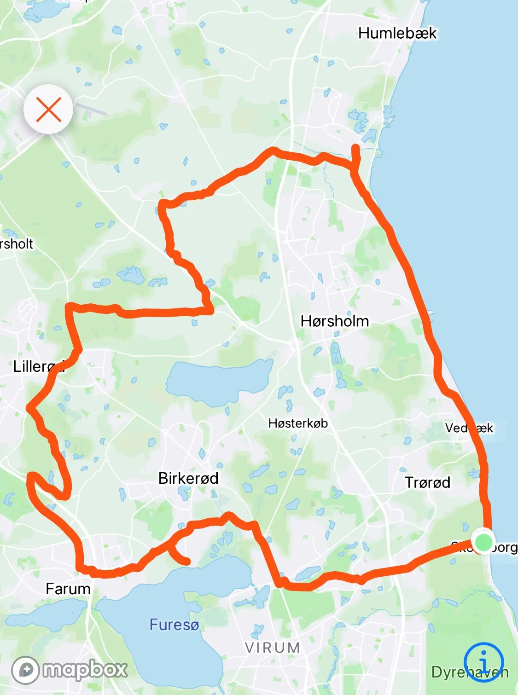
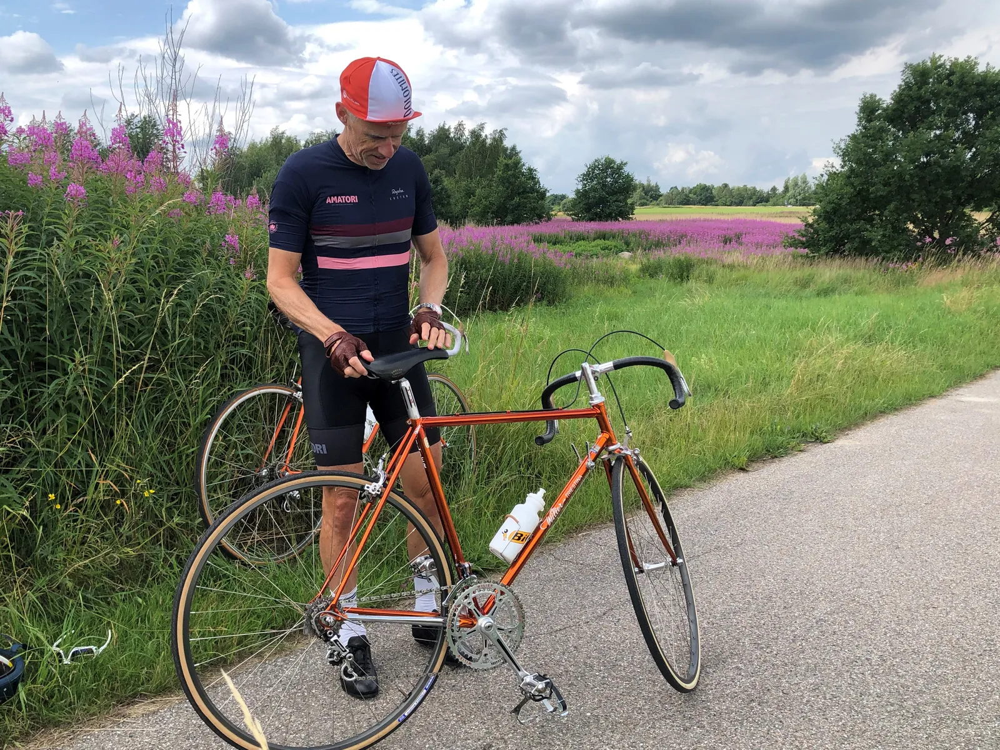
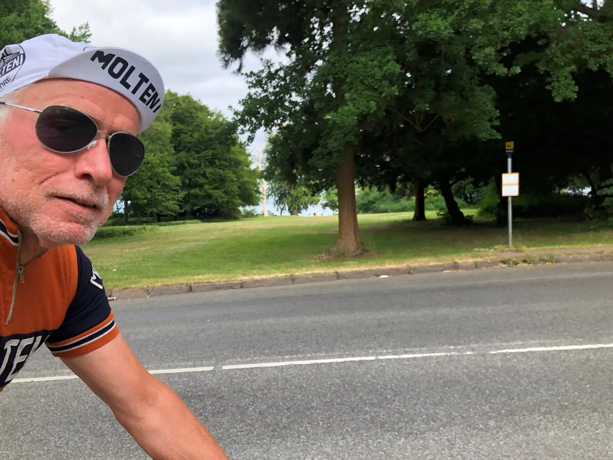

15. etape: Molteni-sejr i Nordsjælland hædres med lokal specialitet

15. etape af Tour de Danmark havde start og mål i Skodsborg ved den gamle stationsbygning, som i dag blandt andet rummer den hyggelige cafe Sne&Snö.
En kort etape på knap 60 km skulle bringe feltet mod vest til Søllerød, Holte, Vaserne og Farum inden ruten zigzaggede nordpå gennem Bregnerød, Lillerød, Gunderød, Avderød og Vejenbrød inden det gik sydpå af Strandvejen ved Nivå.

Tilskuerne kunne ved starten igen konstatere, at Gios Brooklyn holdet imponerede med vedholdende kontinuitet i DNS-kategorien. Til gengæld var der i feltet en rytter fra G.S. Willier-Triestina, der skulle volde Moltenis trup lidt problemer ude på ruten.

På Kongevejens stigning op mod Rudersdal stikker Willier-rytteren og slår et hul. På kontrabakkerne ved Vaserne øges afstanden. Forrest i feltet holder Molteni-holdet kæden stram uden at jagte.
”Vi lader ham lige riste lidt derude”, lyder den taktiske justering fra kaptajn Bjørnsteen.
Molteni vinder spurten og to velholdte au-pairs
Willier-rytteren holder forspringet udover alle Bregnerød og de andre ”rød’er” og først da feltet svinger ud på Strandvejen begynder afstanden at mindskes. Med ca. 15 km til mål begynder Moltenis Jens Langergaard at øge farten i feltet og sekund for sekund nedbringes Willerrytterens forspring, mens Team Peugeot bliver sat fra feltet på grund af den øgede hastighed.
I Vedbæk er forspringet nedbragt til 20 sekunder og der er visuel kontakt og Moltenis tog har trukket feltet ud. På bakken lige efter Vedbæk daler Willier-rytterens forspring yderligere og lige inden nedkørslen mod Skodsborg er der samling og Moltenis lead-out-tog styrer løjerne og bringer Jeppe Thiemer til sejr.
Som det ofte sker ved nationale etapeløb hædres etapevinderen med en gave i form af en lokal specialitet, eller noget der kendetegner området. Således også i Skodsborg og derfor står Jeppe Thiemer og dermed Squadra Molteni nu med to brugte men meget velholdte au-pairs fra Filippinerne.
Vi har prøvet at vinde lokale oste, øl og portvin, men det her har vi ikke prøvet før. Vi kan desværre ikke bringe billeder af de to au-pairs. Og heller ikke navne. Sagen er at deres opholdstilladelse er udløbet og indtil vi får det på plads går vi lige under radaren med personfølsomme oplysninger og fotos, meddeler holdet i et communique.

15. Etape:
1. Jeppe Thiemer, Squadra Molteni
Klassement:
1.Jeppe Thiemer, Squadra Molteni
2. Jens StærkBojesen, Squadra Molteni
3. Carsten Jacobsen, Squadra Molteni
4. Svend Seegert, Squadra Molteni
5. Jens Langergaard, Squadra Molteni
6. Eigil Leegaard, Squadra Molteni
7. Max ”Maxteni” Nielsen, Squadra Molteni
8. Per Sandahl, Squadra Molteni
9. Grane Maaløe, Squadra Molteni
10. Niels Bjørnsteen, Squadra Molteni
11. Løjtnant Sørensen, Squadra Molteni
Hold:
1. Squadra Molteni
2. Team Willier-Triestina
3. Team Peugeot Re-Cycled
4. Team K-Werk
DNS-Klassement:
Thomas Marker, Team Brooklyn